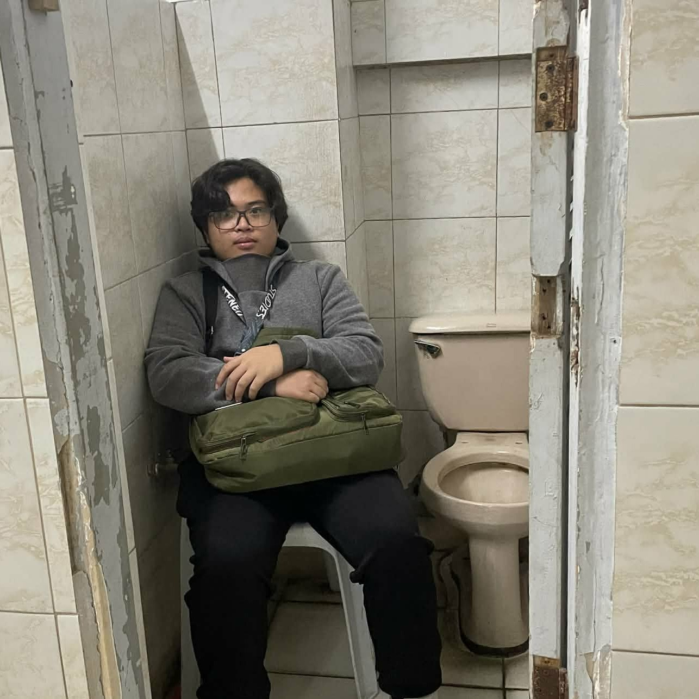
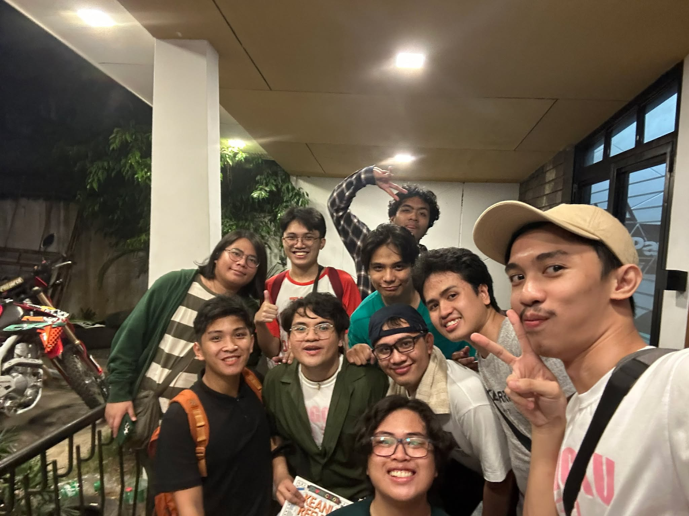

"Taking things as they come."

Hi! I'm Julius Maximus N. Bragas, but you can call me Julius.
"Taking things as they come" has always been my quote unquote mantra when it came to dealing with just about anything in my life currently. To deal with matters the moment they arrive at my doorstep. I mean, what's the point of fearing something that hasn't come yet when it will inevitably come no matter if I'm ready or not, right? But to accept the uncertainty pales in comparison for the next step. Dealing with the issue at my doorstep calmly. I haven't quite figured that part out just yet, but I will eventually. Eventually, all of us students figure it out.
My College Must-Haves
- Laptop - Being a computer studies student, it's a no-brainer that I must have a laptop with me.
- Video essays - I love listening to video essays about philosophy, movies, or just about anything of interest.
- Music - Some would say the first song you listen to in the morning sets the tone of your whole day.
- Phone - I. Am. Gen Z. Thus. I. Need. Phone. Also pretty useful for passing the time in-between lectures.
- Notebook and Pen - As much of a Gen Z I am, there's still a certain charm to taking notes the classic way. It's required for the identity of a student, if you get what I mean.
- Friends - What's more fun that suffering in college? Suffering in college with friends.

Spending time with friends can be fun.
Daily Routine
- 8am - Wake up
- 8am-10am - Help Mom with her work
- 11am - Lunch
- 12nn-until whenever - Class/Studying
- 7:30pm/8:30pm - Go home
- 12mn - 8am - Sleep (optional)
Hobbies
I've taken up reading mangas again, which is awesome. Other times though, I like to just play videogames either alone or with friends. But most of the time, I like to engage in the fun hobby of sleeping.
I also like watching movies too!
Past Lives is my current favorite movie of all time. I highly recommend it!
Additional Information
Work Experience: uhhh well I've just mostly helped mom with her business, half of my life. Naught more I can say than that.